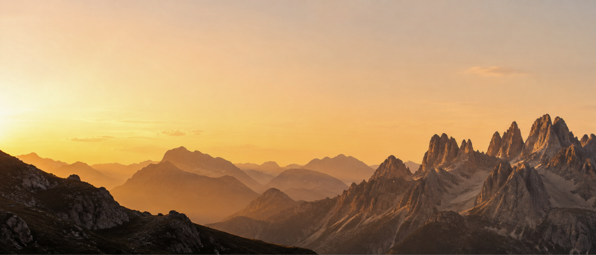
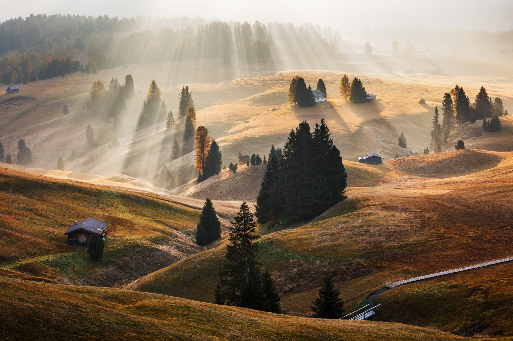
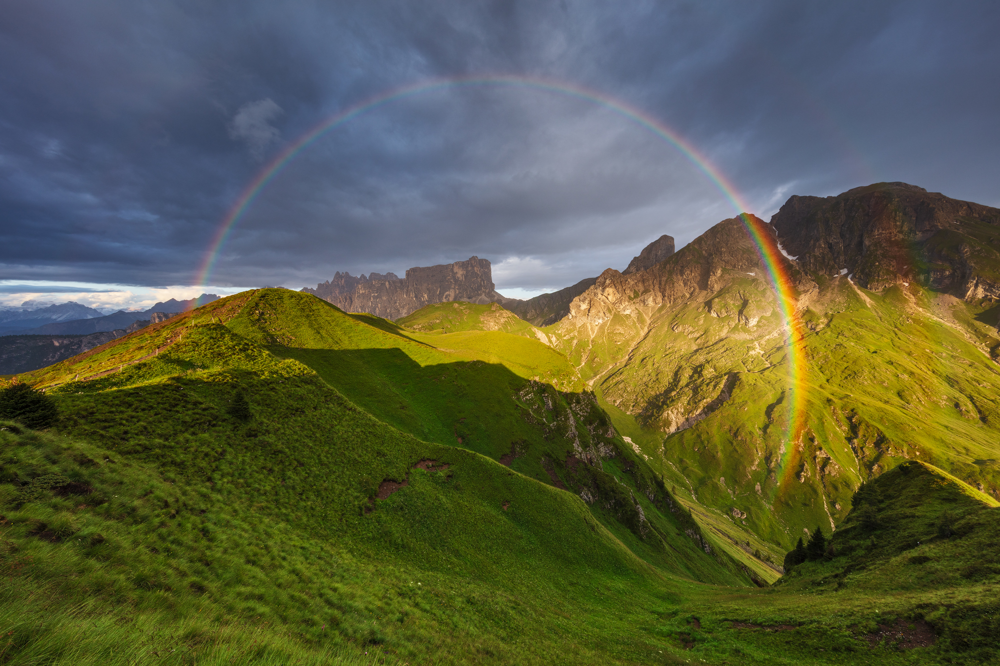
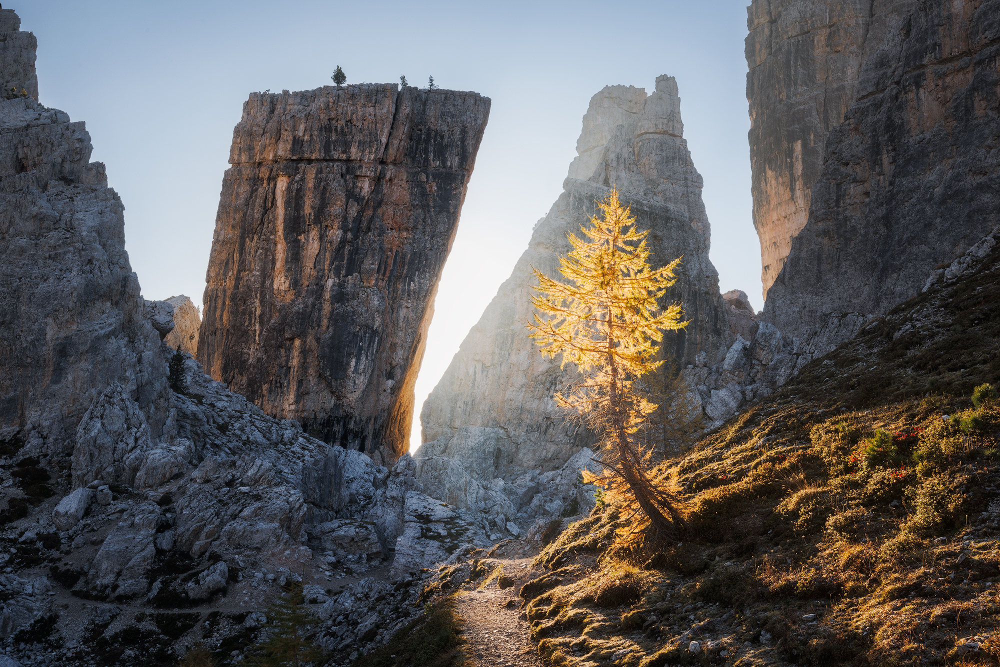
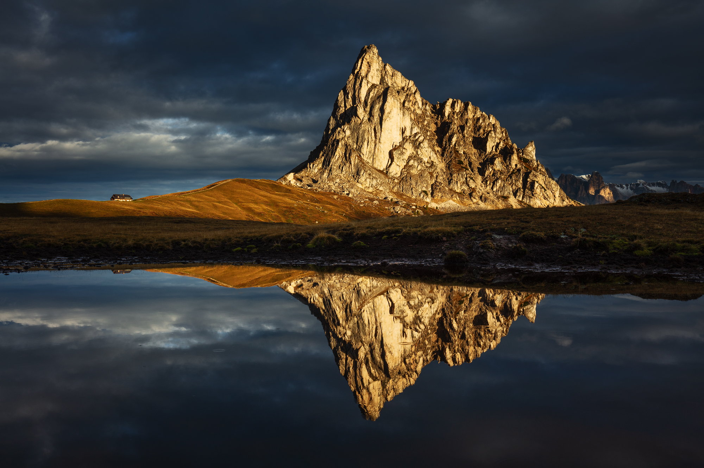
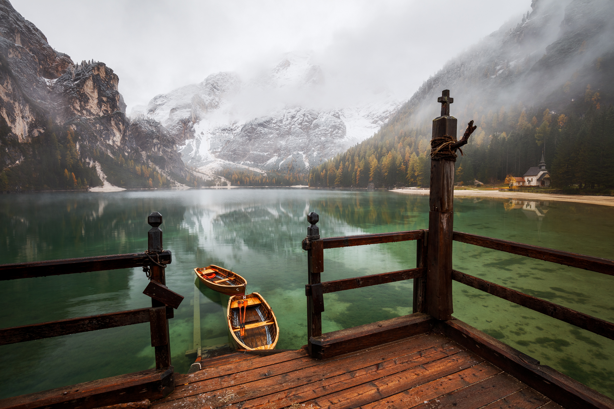
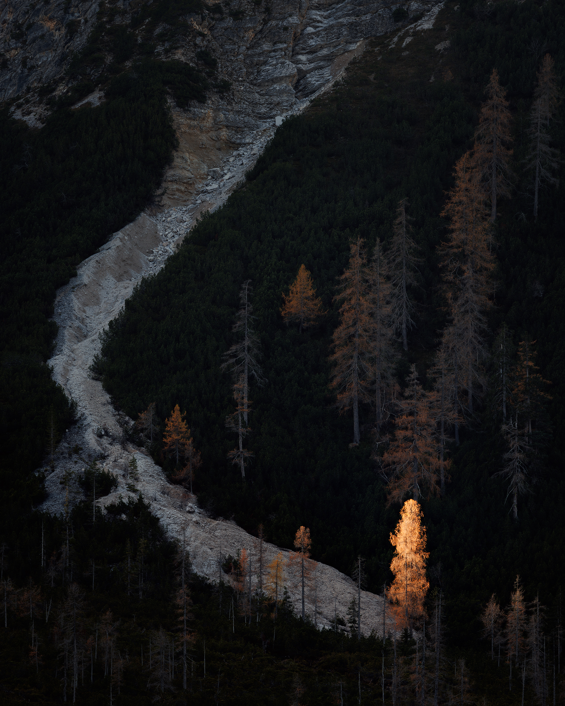
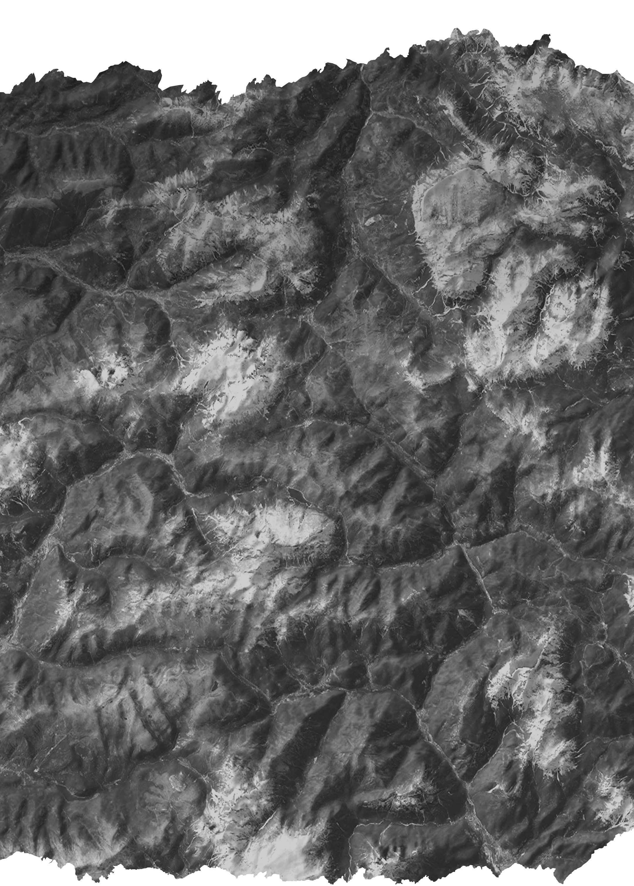

Dolomiti
ДОЛОМИТОВЫЕ АЛЬПЫПроверь подключение и поддержку WebGL в браузере.
Открыть изображение карты

Рельеф, который
меняется
Доломиты кажутся неподвижными, но их рельеф продолжает меняться. Талая вода просачивается в трещины и при замерзании расширяет их. Постепенно от скал отделяются обломки, которые смещаются вниз и образуют осыпи.
Как это
работает?
-
Снег
Таяние снега наполняет склон влагой и запускает движение воды.
-
Вода
Талая и дождевая вода проникает в поры и трещины горной породы.
-
Лёд
При замерзании вода расширяется. Повторение этих циклов постепенно расширяет трещины.
-
Осыпь
Отколовшиеся обломки смещаются вниз по склону и накапливаются у подножия скал.


07 / Природа маршрута
Почему меняются
тропы и склоны
Рельеф меняется — и вместе с ним меняется путь.
Вода проникает в трещины и замерзает. Трещины расширяются, а отколовшиеся обломки смещаются вниз по склону.
Вода → лёд → трещина → осыпь
От наблюдения — к путешествию. Выбери маршрут в Альта-Бадии и взгляни на Доломиты вместе с местным гидом.

МаршрутПлато, панорамы и следы перемен в ландшафте.
Открыть маршрут
Породы и следы ледников на горных тропах.
Выбрать поход с гидом
Скальные массивы и высокогорные тропы.
Открыть маршрут
Горные озёра и плато восточных Доломитов.
Карта остановок
Горные и пешеходные гиды Альта-Бадии.
Найти гидаДержись размеченной тропы
Так ты сохраняешь растения, уменьшаешь эрозию и не тревожишь животных.
